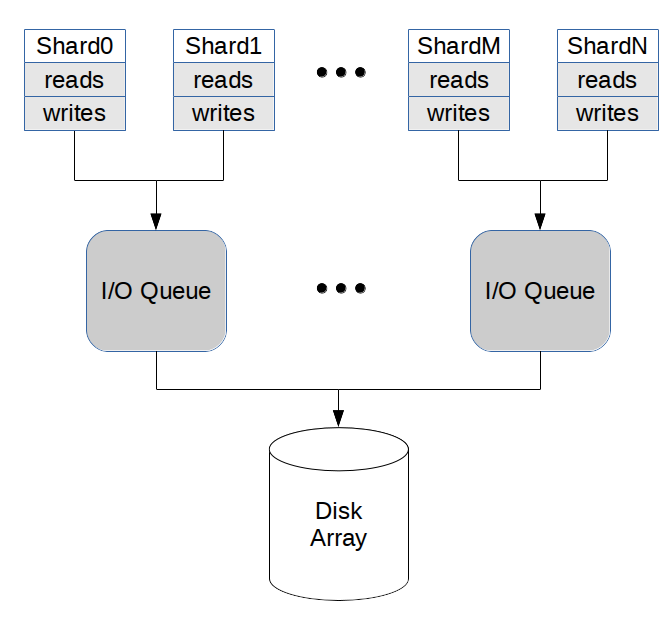

Designing a Userspace Disk I/O Scheduler for Modern Datastores: the ScyllaDB example
https://www.scylladb.com/2016/04/14/io-scheduler-1/
https://www.scylladb.com/2016/04/29/io-scheduler-2/
disk有个iodepth概念：同时可以处理这么多个IO requests, 超过的请求就需要排队等待。对于scylladb因为是类似core-binding, event-driven的方式，所以不能轻易地让IO排队，不然对于请求延迟就没有办法控制，所以需要在userspace上来实现diskio scheduler.
按照这篇文章的说法 https://www.scylladb.com/2016/02/09/qualifying-filesystems/ 实现真正完全异步需要文件系统的支持，否则底层可能偷偷地转为同步请求.（XFS在某些系统上还不支持async append writer, 可以通过模拟这个请求并且监控context switch来判断是否支持）
在userspace上实现io scheduler其实也面临同样的问题：concurrent io requests必须适中，太多的话虽然throughput好但是延迟上来，而太少的话磁盘则处于under-utilized状态，必须控制在disk iodepth这个数量上。在userspace可以将所有的io requests收拢，并且可以安排优先级别。
比如可以使用下面的方式：两个shards共享一个IO queue, 相比一个shard使用一个io queue, 好处就是IO queue的io depth翻倍，并且可以更容易地做到balance, 缺点就是需要协调。

然后在IO queue上面可以为不同类型请求安排优先级别，使用shares来指定，比如commit log优先级高有100，而repair read/write低则有20. 在调度过程中，还需要考虑request size, 但是为了做到prefer large request, 对size做了sublinear变换。
The fair queue will allow N requests to be submitted simultaneously, and we will set that to be the I/O Queue’s local I/O depth. Since requests submitted through the queue may have different sizes, an equal shares allowance will not necessarily translate into balanced disk bandwidths. To mitigate that, the fair queue allows for the specification of an associated weight (w). For ScyllaDB, every request submitted through the queue will set its weight according to a sub-linearly increasing function of the request size. The sublinear behavior is designed to reflect the fact that pushing a request into the disk has an initialization cost, so that for a given transfer size, issuing fewer, larger requests will be favored compared to issuing more, smaller requests.
计算过程大致是：
- 每个class有个初始权重(cost) c0 = w / s. 其中w是weight, s是share.
- 每个class上面的请求根据距离上次请求的时间计算得到 c = e^(dt) * c0
- 如果空余的io depth可以满足所有的io queue的话，那么同时进入
- 如果出现contention的话，那么从历史权重(cost)和最低的class里面选择
- 完成的request会将自己的cost累加到对应的class上
UPDATE: 从后面一篇文章改进来看 https://www.scylladb.com/2018/04/19/scylla-i-o-scheduler-3/ 他们在io depth上做了适当的调整。整个driver工作方式是是：
- 运行一段计算密集代码(0.5ms), 等待期间到达的IO requests.
- 根据request size计算出concurrent requests然后进行提交，而不是使用固定的io depth去进行提交。
- 对于大的request使用bandwidth来进行显示，对于小的request则使用throught * latency来进行限制。
- 最终的结果是将所有的reuqests特征转变成为request number来进行限制。(只不过这个转变感觉是有点机械的，所以后面他们提出了更加general solution)
While the current I/O Scheduler would keep 32 requests in parallel for all of those situations, the proposed version would (assuming a 0.5ms task quota) keep
- x = 95 kIOPS * 1.5 * 0.5 ms = 70 concurrent 4kB requests, and
- y = 512 MB * 1.5 * 0.5 ms = 402kB, or ~3 concurrent 128kB requests.